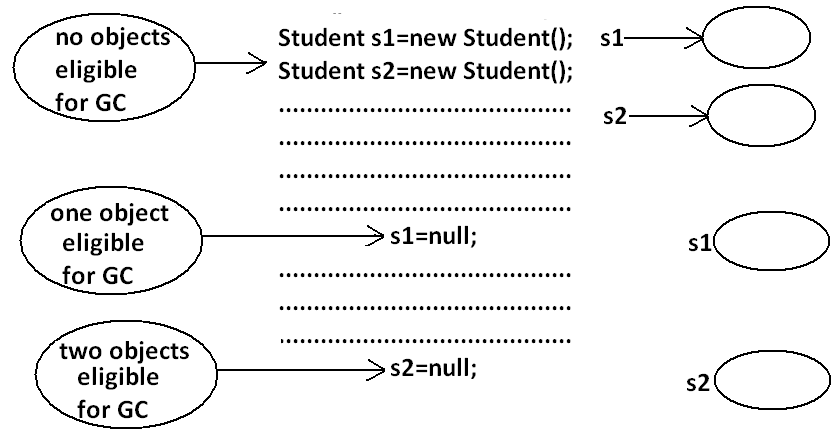
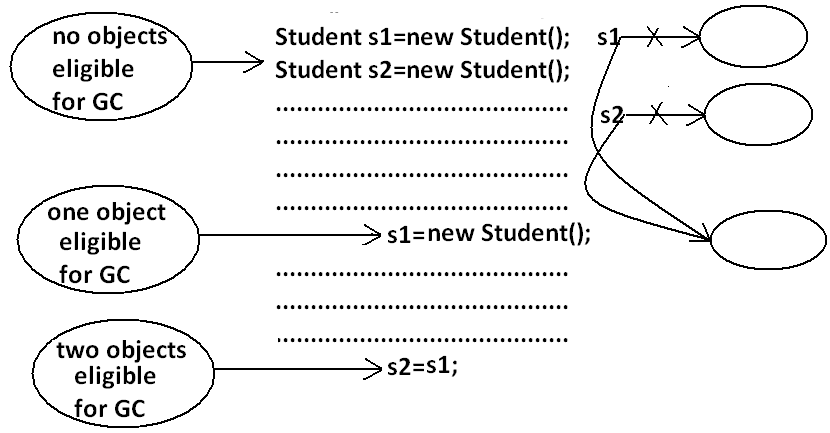
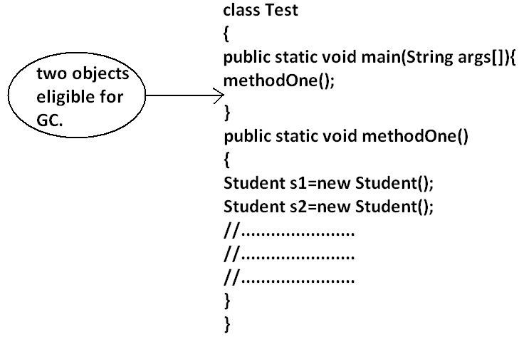
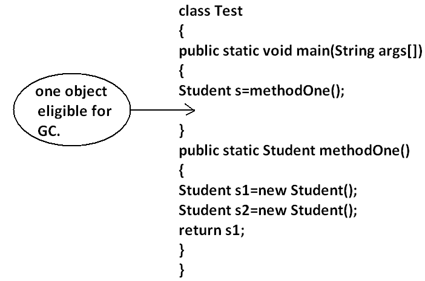
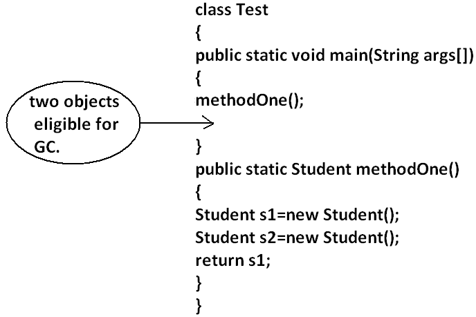
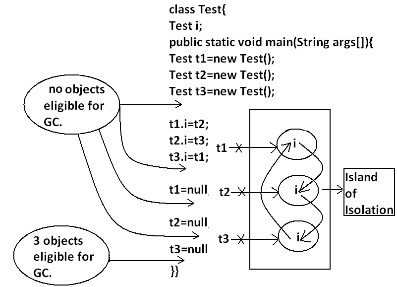
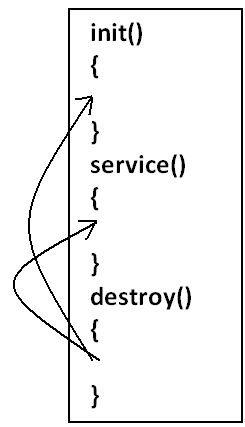

Garbage Collection in Java
- Introduction:
- The way to make an object eligible for GC
- The methods for requesting JVM to run GC
- Finalization
- Case 1 : Just before destroying any object GC calls finalize() method on the object
- Case 2 : We can call finalize() method explicitly
- Case 3 : finalize() method can be call either by the programmer or by the GC
- Case 4 : On any object GC calls finalize() method only once
- Memory leaks
1. Introduction :
- In old languages like C++ programmer is responsible for both creation and destruction of objects. Usually programmer is taking very much care while creating object and neglect destruction of useless objects .Due to his negligence at certain point of time for creation of new object sufficient memory may not be available and entire application may be crashed due to memory problems.
- But in java programmer is responsible only for creation of new object and his not responsible for destruction of objects.
- Sun people provided one assistant which is always running in the background for destruction at useless objects. Due to this assistant the chance of failing java program is very rare because of memory problems.
- This assistant is nothing but garbage collector. Hence the main objective of GC is to destroy useless objects.
The ways to make an object eligible for GC:
- Even through programmer is not responsible for destruction of objects but it is always a good programming practice to make an object eligible for GC if it is no longer required.
- An object is eligible for GC if and only if it does not have any references.
The following are various possible ways to make an object eligible for GC:
1.Nullifying the reference variable:
If an object is no longer required then we can make eligible for GC by assigning "null" to all its reference variables. Example:

2.Reassign the reference variable:
If an object is no longer required then reassign all its reference variables to some other objects then old object is by default eligible for GC. Example:

3. Objects created inside a method:
Objects created inside a method are by default eligible for GC once method completes. Example 1:

Example 2:

Example 3:

Example 4:

4.Island of Isolation:

Note: if an object doesn't have any reference then it always eligible
for GC.
Note: Even though object having reference still it is eligible for GC
some times.
Example:
island of isolation. (Island of Isolation all references are internal references )
The methods for requesting JVM to run GC:
- Once we made an object eligible for GC it may not be destroyed immediately by the GC. Whenever jvm runs GC then only object will be destroyed by the GC. But when exactly JVM runs GC we can't expert it is vendor dependent.
- We can request jvm to run garbage collector programmatically, but whether jvm accept our request or not there is no guaranty. But most of the times JVM will accept our request.
The following are various ways for requesting jvm to run GC:
By System class:
System class contains a static method GC for this purpose.Example:
System.gc();
By Runtime class:
- A java application can communicate with jvm by using Runtime object.
- Runtime class is a singleton class present in java.lang. Package.
- We can create Runtime object by using factory method getRuntime().
Runtime r=Runtime.getRuntime();
Once we got Runtime object we can call the following methods on that object.
freeMemory():
returns the free memory present in the heap.
totalMemory(): returns total memory
of the heap.
gc(): for requesting jvm to run gc.
import java.util.Date;
class RuntimeDemo
{
public static void main(String args[]){
Runtime r=Runtime.getRuntime();
System.out.println("total memory of the heap :"+r.totalMemory());
System.out.println("free memory of the heap :"+r.freeMemory());
for(int i=0;i<10000;i++)
{
Date d=new Date();
d=null;
}
System.out.println("free memory of the heap :"+r.freeMemory());
r.gc();
System.out.println("free memory of the heap :"+r.freeMemory());
}
}
Output:
Total memory of the heap: 5177344
Free memory of the heap: 4994920
Free memory of the heap: 4743408
Free memory of the heap: 5049776
Note : Runtime class is a singleton class so not create the object to use
constructor.
Which of the following are valid ways for requesting jvm
to run GC ?
System.gc(); (valid)
Runtime.gc(); (invalid)
(new Runtime).gc(); (invalid)
Runtime.getRuntime().gc(); (valid)
Note: gc() method present in System class is static, where as it
is instance method in Runtime class.
Note: Over Runtime class gc() method , System class gc() method
is recommended to use.
Note: in java it is not possible to find size of an object and
address of an object.
Finalization:
- Just before destroying any object gc always calls finalize() method to perform cleanup activities.
- If the corresponding class contains finalize() method then it will be executed otherwise Object class finalize() method will be executed.
protected void finalize() throws Throwable
Case 1:
Just before destroying any object GC calls finalize() method on the object which is
eligible for GC then the corresponding class finalize() method will be executed.
For Example if String object is eligible for GC then String class finalize()method is executed but not Test class finalize()method.
Example:class Test
{
public static void main(String args[]){
String s=new String("bhaskar");
Test t=new Test();
s=null;
System.gc();
System.out.println("End of main.");
}
public void finalize(){
System.out.println("finalize() method is executed");
}
}
Output:
End of main.
In the above program String class finalize()method got executed. Which has empty
implementation.
If we replace String object with Test object then Test class finalize() method will be executed .
The following program is an Example of this.
Example:class Test
{
public static void main(String args[]){
String s=new String("bhaskar");
Test t=new Test();
t=null;
System.gc();
System.out.println("End of main.");
}
public void finalize(){
System.out.println("finalize() method is executed");
}
}
Output:
finalize() method is executed
End of main
Case 2:
We can call finalize() method explicitly then it will be executed just like a normal method call and object won't be destroyed. But before destroying any object GC always calls finalize() method.
Example:class Test
{
public static void main(String args[]){
Test t=new Test();
t.finalize();
t.finalize();
t=null;
System.gc();
System.out.println("End of main.");
}
public void finalize(){
System.out.println("finalize() method called");
}
}
Output:
finalize() method called.
finalize() method called.
finalize() method called.
End of main.
In the above program finalize() method got executed 3 times in that 2 times explicitly
by the programmer and one time by the gc.
Note: In Servlets we can call destroy() method explicitly from
init() and service() methods. Then it will be executed just like a normal method call
and Servlet object won't be destroyed.

Case 3:
finalize() method can be call either by the programmer or by the GC .
If the programmer calls explicitly finalize() method and while executing the finalize()
method if an exception raised and uncaught then the program will be terminated
abnormally.
If GC calls finalize() method and while executing the finalize()method if an exception
raised and uncaught then JVM simply ignores that exception and the program will be
terminated normally.
class Test
{
public static void main(String args[]){
Test t=new Test();
//t.finalize();-------line(1)
t=null;
System.gc();
System.out.println("End of main.");
}
public void finalize(){
System.out.println("finalize() method called");
System.out.println(10/0);
}
If we are not comment line1 then programmer calling finalize() method explicitly and
while executing the finalize()method ArithmeticException raised which is uncaught hence
the program terminated abnormally.
If we are comment line1 then GC calls finalize() method and JVM ignores
ArithmeticException and program will be terminated normally.
Which of the following is true?
While executing finalize() method JVM ignores every exception(invalid).
While executing finalize() method JVM ignores only uncaught exception(valid).
Case 4:
On any object GC calls finalize() method only once.
Example:class FinalizeDemo
{
static FinalizeDemo s;
public static void main(String args[])throws Exception{
FinalizeDemo f=new FinalizeDemo();
System.out.println(f.hashCode());
f=null;
System.gc();
Thread.sleep(5000);
System.out.println(s.hashCode());
s=null;
System.gc();
Thread.sleep(5000);
System.out.println("end of main method");
}
public void finalize()
{
System.out.println("finalize method called");
s=this;
}
}
Output:
D:\Enum>java FinalizeDemo
4072869
finalize method called
4072869
End of main method
Note: The behavior of the GC is vendor dependent and varied from JVM to JVM hence we can't expert exact answer for the following.
- What is the algorithm followed by GC.
- Exactly at what time JVM runs GC.
- In which order GC identifies the eligible objects.
- In which order GC destroys the object etc.
- Whether GC destroys all eligible objects or not.
When ever the program runs with low memory then the JVM runs GC, but we can't except
exactly at what time.
Most of the GC's followed mark & sweap algorithm , but it doesn't mean every
GC follows the same algorithm.
Memory leaks:
- An object which is not using in our application and it is not eligible for GC such type of objects are called "memory leaks".
- In the case of memory leaks GC also can't do anything the application will be crashed due to memory problems.
- In our program if memory leaks present then certain point we will get OutOfMemoryException. Hence if an object is no longer required then it's highly recommended to make that object eligible for GC.
- By using monitoring tools we can identify memory leaks.
Example: HPJ meter HP ovo IBM Tivoli These are monitoring tools. J Probe (or memory management tools) Patrol and etc